RAW 编辑器与照片图库。
导入照片后，在同一个项目中浏览、评分和搜索，并在 32 位浮点 GPU 管线中冲洗 RAW 文件。免费开源，支持 Windows 与 Mac。
Windows 10/11 x64 · Apple Silicon Mac · 免费开源（GPL-3.0）
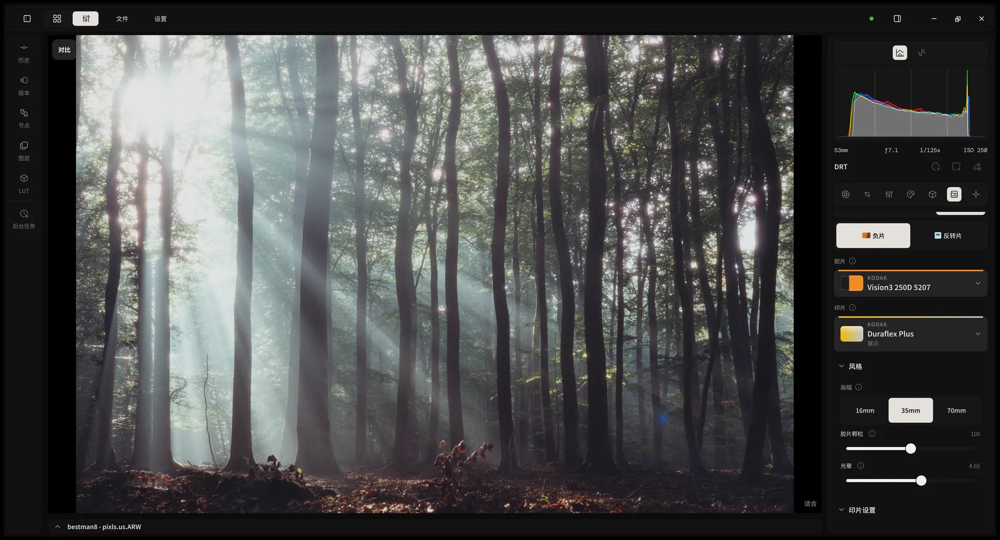
照片：some sunbeams in the forest，作者 bestman8，来自 discuss.pixls.us，CC BY-SA 4.0 许可；在 Alcedo Studio 中编辑。
0.3.5 新增
光谱胶片模拟。
胶片印片把调色后的图像当作照到胶片上的光：按各感光层的光谱灵敏度曝光并显影，再把负片印放到相纸或电影印片胶片上，或扫描反相；反转片以灯箱观看方式呈现。
胶片模拟说明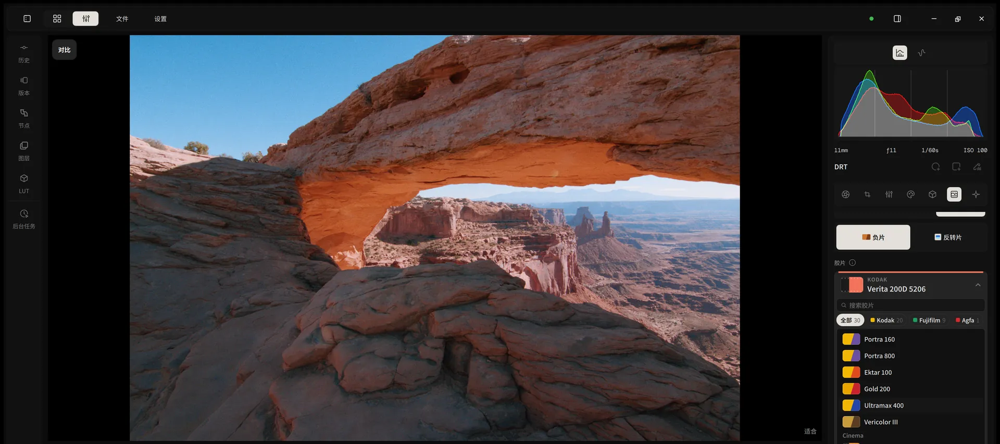
照片：Arches National Park (Utah, USA)，作者 LaurentFromSF，来自 discuss.pixls.us，CC BY-SA 4.0 许可；在 Alcedo Studio 中编辑。
30 款负片，5 款反转片
任一负片都可以搭配摄影相纸或电影印片胶片，包括 Cine Look（Kodak Vision 2383）。胶片浏览器可按工艺和品牌筛选，并显示每款胶片的色卡。
负片扫描
虚拟扫描器读取并反转负片，再由 OpenDRT 形成 SDR 或 HDR 画面。可以调整扫描曝光、对比度、青、品、黄和黑位。
片幅与颗粒
可选 16mm、35mm 或 70mm。颗粒在胶片层中形成，使用所选片种的颗粒度数据；较小片幅也会放大光扩散和光晕。
印片
Kodak Vision3 500T 印放到 Kodak Vision 2383，输出 Rec. 709 SDR。
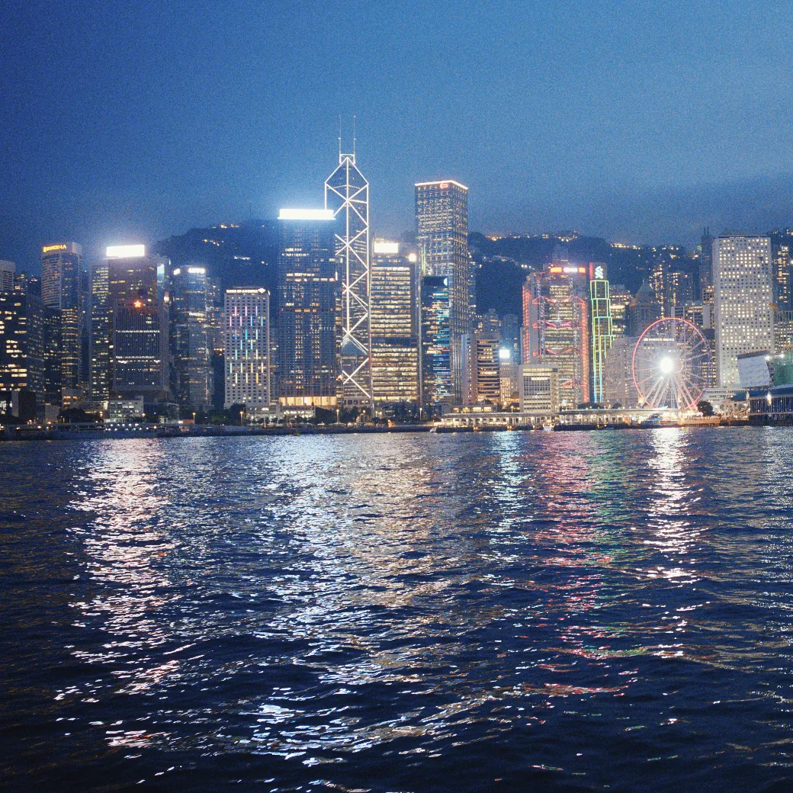
负片扫描
同一张负片经扫描反相，再由 OpenDRT 形成画面。
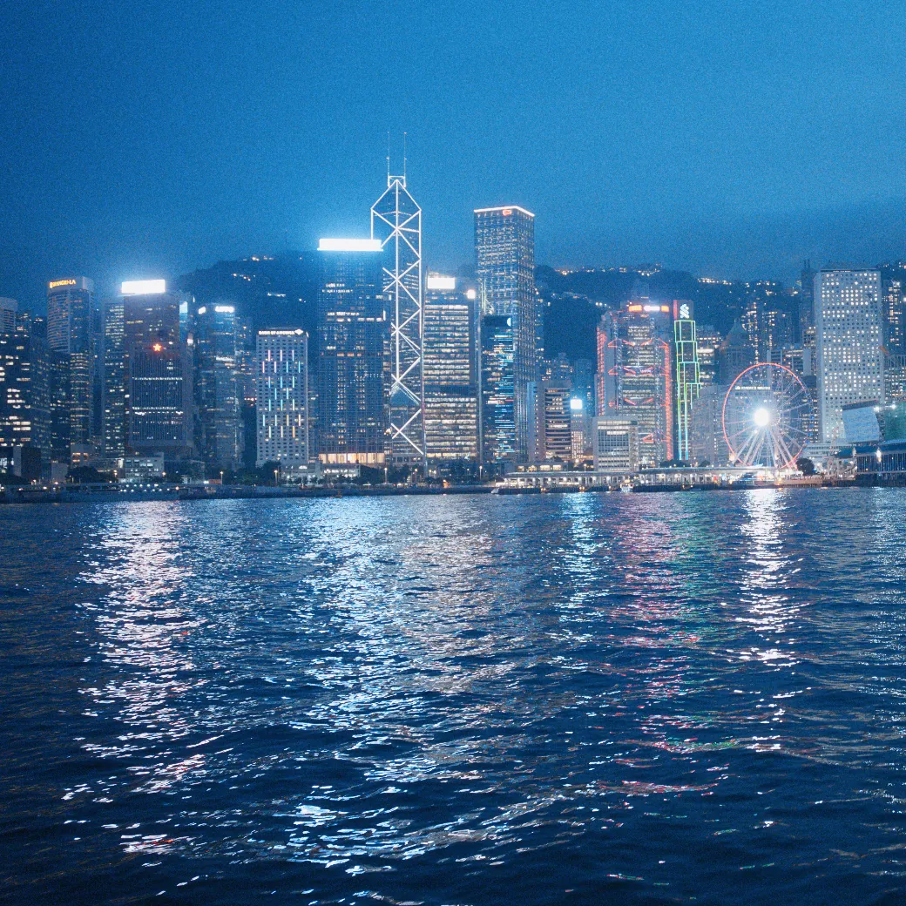
反转片
Fujichrome Velvia 100，灯箱观看。
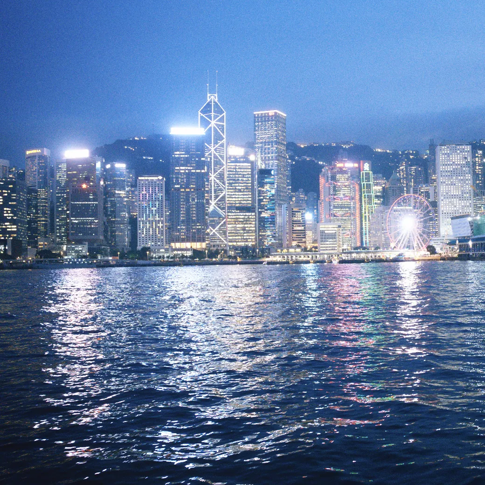
同一张维多利亚港的 RAW 文件，由 alcedo-cli 渲染出的三种结果。
0.3.4 新增
节点、蒙版与 AI 蒙版。
每个 Color Grade 节点都有自己的调整和蒙版，一次调色既可以作用于整个画面，也可以只作用于选定区域。蒙版可以是线性渐变、径向渐变或 AI 蒙版。
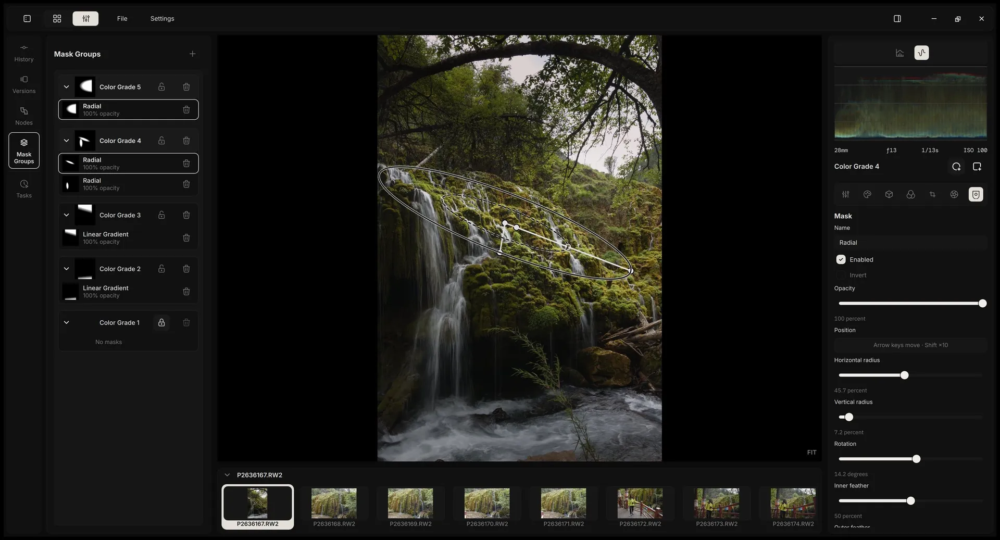
AI 蒙版
一键选择主体、背景、天空或人物，也可以通过点选、绘制路径或框选来选择任意物体。支持添加、减去选区，调整羽化和扩展。
明度与色相范围
任意蒙版都可以按明度和色相进一步限制，提供双滑块范围条、柔和度和饱和度门槛。“显示选区”可查看实际覆盖范围。
在本机运行
AI 蒙版模型在本机运行，可在“设置 > AI 模型”中下载，每张模型卡片显示许可证和大小。已保存的蒙版渲染时无需重新运行模型。
AI 智能体
脚本与 AI 智能体。
alcedo-cli 随 Alcedo Studio 一起安装，界面中的每个操作都有对应命令。Claude Code、Codex 或 shell 脚本可以打开项目、导入、评分、修图、搜索和导出，既可以在后台运行，也可以在你正在使用的窗口中操作。
为智能体安装 Alcedo skill# 逆光偏暗：把主体提亮 alcedo-cli --session gui call editor.batch_set '{"changes":[ {"field":"exposure","value":0.65}, {"field":"highlights","value":-42}, {"field":"shadows","value":28}], "note":"agent: lift the backlit subject"}' {"applied":3,…}
在当前窗口或在后台
共享你打开的窗口，看着滑块被调动；也可以启动无窗口会话，在后台处理整个文件夹。
控制权
智能体操作期间，编辑控件会锁定，但仍可平移、缩放和查看示波器。点击“停止”立即收回控制权。
记录在历史中
历史记录会标出智能体所做的编辑，并显示它的说明；撤销与你自己的编辑一样有效。
LUT
胶片 LUT，以及你自己的 LUT。
按分类、来源、品牌和印片筛选 LUT，网格卡片以当前照片预览每个 LUT。为 LUT 设置它期望的输入编码和产生的输出编码，Alcedo 会在这些编码与场景空间之间转换。
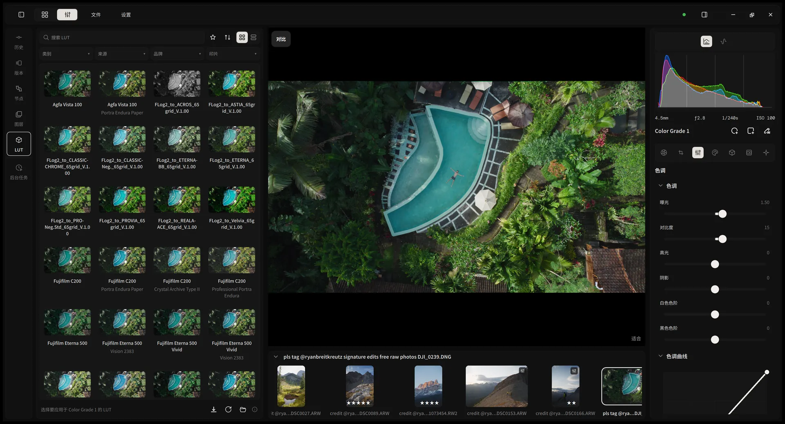
照片：Ryan Breitkreutz（@ryanbreitkreutz），来自 Signature Edits 免费 RAW 照片。
50 种编码
场景编码包括 ARRI LogC3 和 LogC4、Canon Log、F-Log2 C、V-Log、Apple Log 2、Cineon 和 ACES；显示编码包括 sRGB、BT.1886、PQ 和 HLG。Alcedo 可以为每个 LUT 记住编码组合。
官方 LUT 包
来自 Spectral Film LUT 与 spektrafilm 的 113 款胶片 LUT，在“设置 > LUT”中下载，安装前校验签名。你自己的 .cube 文件归入“User”分类。
黑柔滤镜
让明亮光源泛起柔和光晕，中间调细节保持清晰；与清晰度、锐化、颗粒和光晕放在同一页。
工具
调整面板。
RAW 解码、影调、曲线、色轮、可选颜色、细节、LUT 和显示变换，都是右侧面板中的页面。
- 曝光
- 对比度
- 高光
- 阴影
- 白色色阶
- 黑色色阶
- 白平衡
- 色调曲线
- 色轮
- 清晰度
- 锐化
- 可选颜色
- 局部色调映射
- AI 蒙版
- 径向蒙版
- 线性蒙版
- 范围蒙版
- LUT 浏览器
- 胶片印片
- 颗粒
- 光晕
- 黑柔滤镜
- 镜头校正
- 版本
- 前后对比
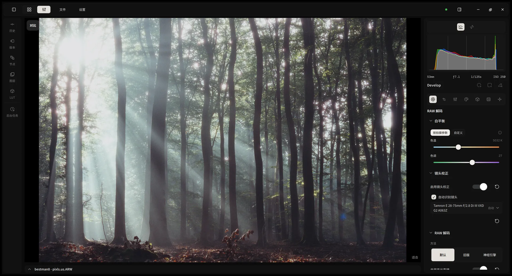
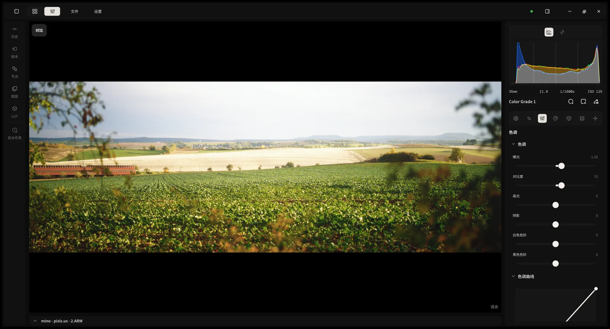
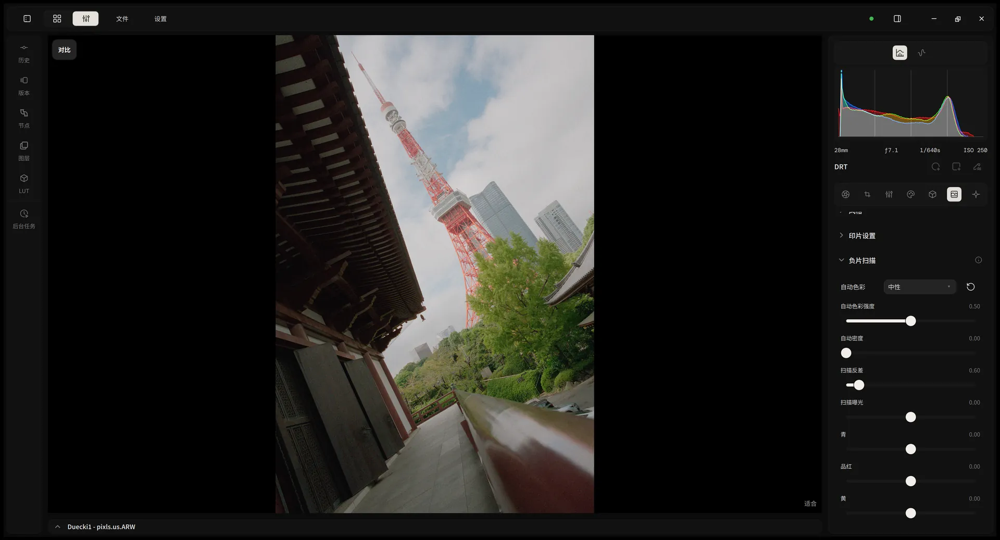
- RAW 解码
- 影调
- 负片扫描
照片：some sunbeams in the forest，作者 bestman8；Single autumn tree，作者 mino；Zojo-ji and the Tokyo Tower，作者 Duecki1。均来自 discuss.pixls.us，CC BY-SA 4.0 许可；在 Alcedo Studio 中编辑。
性能
解码一次，实时调色。
RAW 解码和几何处理只计算一次并缓存。Color Grade 节点不缓存：每次改动都从缓存的图像出发，在 GPU 上（CUDA、OpenCL 或 Metal）重新计算，两块缓冲交替读写，因此显存不随节点数量增长。拖动时预览即时更新，松开后呈现完整画质。
- Develop命中缓存
- Grade 1重算
- Grade 2正在调整
- Grade 3重算
- DRT重算
- 60帧拖动滑块时的预览
- 2000×两万张图库的搜索速度，与 0.2.9 相比
- 150MB导入两万张照片时的内存占用
图库数据来自开发者对 0.2.9 与 0.3.0 的基准测试（两万张照片），实际表现因硬件而异。
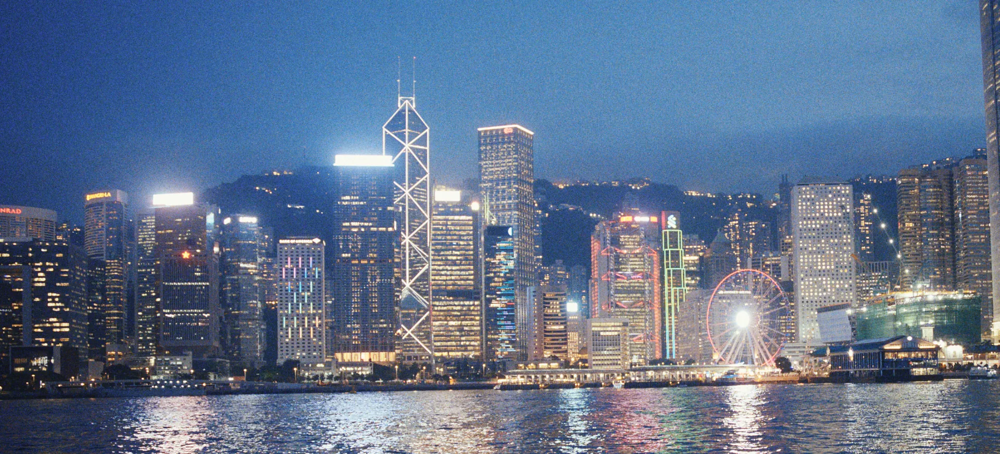
场景参考，从 RAW 到显示器。
整个编辑过程保留 RAW 文件的全部动态范围，只在最后一步用 ACES 2.0、OpenDRT 或胶片印片为显示器形成画面。在配备 HDR 显示屏的 Mac 上，编辑器可以直接预览 HDR。
维多利亚港。Kodak Vision3 500T 印放到 Kodak Vision 2383。
工作区
图库与编辑器在同一个窗口。
图库与编辑器共用一个窗口和一个项目文件。相册结构和每张照片的完整编辑历史都在这个文件里，备份就是复制一个文件。
照片：Aqueduct in the Bergpark，作者 mino，来自 discuss.pixls.us，CC BY-SA 4.0 许可；在 Alcedo Studio 中编辑。
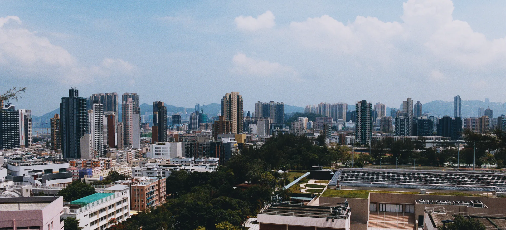
免费、开源。
没有订阅，不用注册账号。图库保存在你的电脑上，源代码以 GPL-3.0 公开在 GitHub。
九龙。Kodak Portra 400 印放到 Kodak Endura Premier 相纸。
下载 Alcedo Studio
免费开源，支持 Windows 与 Apple Silicon Mac。
Windows 10/11 x64 · Apple Silicon Mac · 免费开源（GPL-3.0）
升级须知：AI 模型和 LUT 需要在“设置”中单独下载。0.3.4 起色轮分为 Lift、Gamma、Gain 和 Offset，打开旧项目时会转换旧参数。0.3.5 移除了“高级内容分析”。0.3 无法打开 0.2.9 及更早版本创建的工程文件。
照片署名
以下照片发布在 discuss.pixls.us，以 CC BY-SA 4.0 许可共享。这些照片在 Alcedo Studio 中经过编辑，本页展示它们的截图同样以 CC BY-SA 4.0 许可共享。
- some sunbeams in the forest，作者 bestman8
- Arches National Park (Utah, USA)，作者 LaurentFromSF
- Single autumn tree，作者 mino
- Aqueduct in the Bergpark，作者 mino
- Zojo-ji and the Tokyo Tower，作者 Duecki1
LUT 浏览器截图中的照片由 Ryan Breitkreutz（@ryanbreitkreutz）拍摄，来自 Signature Edits 免费 RAW 照片。
香港的照片由 Alcedo Studio 开发者拍摄。